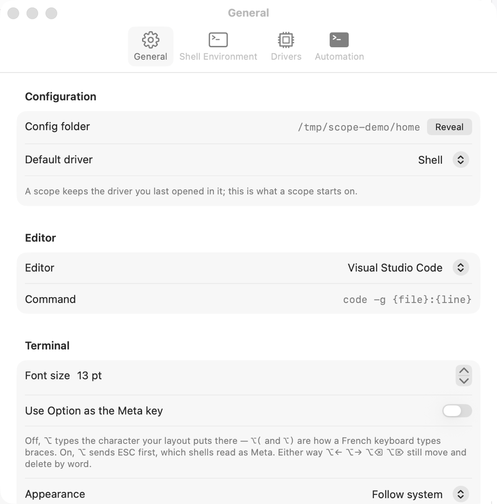

Scopes, threads, drivers
Five nouns carry the whole app. Learn them once and every panel makes sense.
Scope
A folder you declared. It is the unit of everything: the sidebar shows one scope at a time, tasks belong to a scope, the graph is cached per scope. A scope has a name, a slug (unique, used for file names) and a discovery depth.
Scopes may nest — declaring ~/Developer and ~/Developer/acme both is allowed; each
keeps its own tasks and graph.
Repository
A git repository found inside the scope. Scope reads it — HEAD, default branch, remotes, status — and never writes to it, except when you explicitly commit, push or pull from a panel. A repository row shows the repo name; the owner appears in the tooltip.
Thread
A driver running in an embedded terminal (a real PTY, via SwiftTerm), with a working directory, a title and a persisted record. Threads are listed in the sidebar and switched from there; ⌘1–⌘9 jump to one in sidebar order, ⇧⌘[/⇧⌘] cycle.
Each thread receives:
| Variable | Value |
|---|---|
SCOPE_THREAD | 12-hex thread id, also the record file name |
SCOPE_SCOPE | the scope's slug |
SCOPE_SCOPE_ROOT | absolute path of the scope folder |
SCOPE_HOME | ~/.scope, or wherever you pointed it |
SCOPE_SOCK | unix socket the hooks report to |
SCOPE_TASK, SCOPE_TASK_ROOT | only in a task thread: its slug and root |
Stopping a thread (⌘.) leaves the tab greyed with an exit toast for ten seconds — long enough to relaunch or read the status. Turn on Close exited threads in Settings to have them disappear instead; ⇧⌘T undoes a close.
States
The dot on a tab, a sidebar row and the Dock badge all say the same thing:
- Running — the agent is working.
- Waiting — it asked you something: a prompt, a permission.
- Idle — alive, nothing in flight.
- Done — the turn ended.
States come from the driver's own hooks, not from guessing at terminal output. See hooks and thread states.
Driver
How Scope starts a tool: a JSON profile with a command, arguments, environment and optional argv templates
for resuming a session, running headless, or passing an initial prompt. Four are bundled — Shell, Claude Code,
Codex CLI, Cursor CLI — and copied into ~/.scope/drivers/ on first run, where you can edit them.

Task
A named unit of work with a branch and one git worktree per repository it touches. Threads opened inside a task run in its sandbox. Tasks and sandboxes →
The inspector
The right-hand panel, four tabs, always about the current selection:
| Tab | Shows | Key |
|---|---|---|
| Graph | one card per repository of the scope | |
| Delta | the diff of the task, the working tree, or the branch vs origin | ⌘D |
| Base | the untouched checkout: files, search, history | ⇧⌘B |
| PRs | open pull requests of the repository | ⇧⌘P |
Drag its left edge to resize; ⌥⌘I hides it.